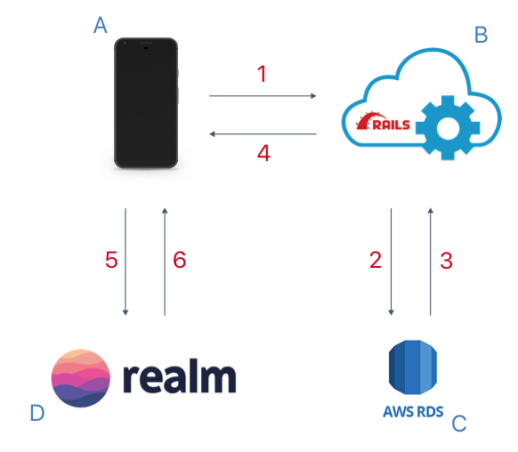
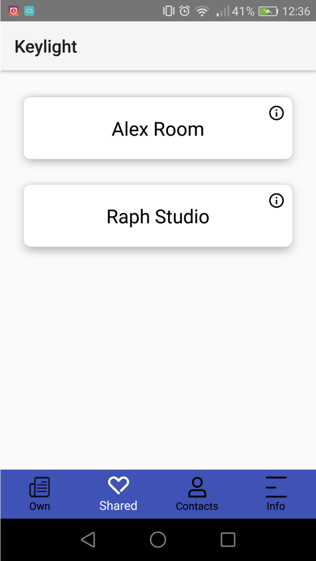
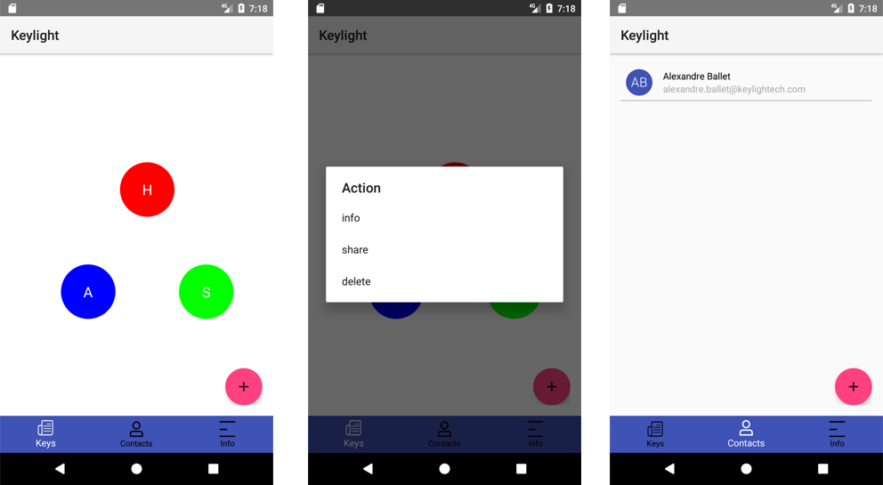

Objectif
L'objectif de ce projet est de développer une application Android offrant une nouvelle façon de gérer ses clefs. Keylight est une start-up qui développe la 1ere serrure connectée à ouverture lumineuse : elle utilise le flash du smartphone comme moyen d'ouverture. Ainsi, l'application Android sera couplée à une API permettant d'interfacer notre base de données et nos applications. Bien que le projet dans le cadre de l'UV NF28 soit l'application Android, le Back-End et le Firmware de la serrure devaient etre développés en parallèle. Les solutions existantes de nos jours ne s'orientent pas vers une utilisation intuituve et rapide de l'application. Nous souhaitons nous concentrer sur un trvail d'ergonomi et d'User Experience afin que l'utilisateur perde le moins de temps possible à chercher, gérer et utiliser ses clefs.Cahier des charges
Ci-dessous le cahier des charges que nous souhaitions réaliser :Principales fonctionnalités
- Ajout de serrures : L’utilisateur doit pouvoir installer une nouvelles serrure en entrant le numéro de série de l’appareil. Il devient alors le propriétaire de cette serrure.
- Organisation des serrures : L’utilisateur doit pouvoir regrouper les serrures comme il le souhaite ainsi que les agencer afin que cela soit plus pratique pour lui des les retrouver.
- Edition des serrures : L’utilisateur doit avoir la possibilité d’éditer les informations d’une serrure (nom, adresse).
- Partage d’une serrure : L’utilisateur doit avoir la possibilité de donner un accès limité ou non à une serrure à un de ses contacts.
- Liste des accès : L’utilisateur doit pouvoir accéder à la liste des accès autorisés à une serrure. Il doit alors pouvoir les modifier et/ou les supprimer.
- Accès partagés : L’utilisateur doit pouvoir accéder aux serrures qui lui sont partagées. De même que ses propres serrures, il doit pouvoir els organiser comme il le souhaite. Il peut partager une de ces serrures si l’accès qui lui a été attribué est un accès « Admin ». Un « Admin » peut gérer tous les accès à une serrure.
- Contacts : L’utilisateur doit pouvoir ajouter/supprimer des utilisateurs et ainsi gérer sa liste de contacts.
Features
- Notifications : Afin de pouvoir ouvrir rapidement un serrure, l’utilisateur doit recevoir une notification à l’approche d’une de ses serrures. Cette notification lui permet d’accéder directement à l’application. Il peut alors lancer le mécanisme d’ouverture (transmission du flash) par le simple déverrouillage de son smartphone.
- Informations personnelles : L’utilisateur doit avoir la possibilité de modifier les informations liées à son compte (identifiant, email, nom, prénom, …).
- Historique des accès : L’utilisateur doit pouvoir accéder à l’historique des verrouillages/déverrouillages des serrures. Chaque entrée doit être accompagnée des informations de la personnes ayant ouvert/fermé la porte.
Présentation
Lors de l'ouverture de l'application, nous arrivons sur le premier onglet, qui est l'onglet Keys. Cette onglet contient toutes les clefs de l'utilisateur, que ce soit ces propres DoorLocks ou des SharedKeys (des clefs d'autres DoorLocks qui lui ont été partagées).
Les couleurs sont fixes et permettent de distinguer les différentes DoorLocks et SharedKeys. Ainsi, l'utilisateur peut facilement et rapidement associer mentalement une clef à une couleur. Même si celui-ci ne peut clairement distinguer l'initiale au centre de la bulle selon les conditions extérieures et la luminosité, il peut se fier à se couleur. Sur cet onglet l'utilisateur peut faire plusieurs choses :- Ajouter une DoorLock en cliquant sur le bouton +. Cela ouvre alors une modale permettant de renseigner les informations de cette DoorLock.
- Déclencher le flash du téléphone par un simple tap sur une bulle. Le flash transmet alors un code en binaire à la serrure qui s'ouvre si ce code est correct.
- Accéder aux différentes actions que l'on peut effectuer sur une DoorLock par un appui long sur une bulle. Si nous n'avons pas un accès administrateur à la serrure en question, un appui long ouvre simplement les informations relatives à la serrure :
- Accéder aux informations générales de la DoorLock A partir de cette modale, nous pouvons accéder à la liste des personnes qui ont accès à la serrure : Et nous pouvons partager la serrure en cliquant sur le bouton de partage en bas de l'écran, modifier des accès existants, ou les supprimer :
- Partager la serrure à l'un de ses contacts : Une fois la personne choisie, il faut préciser le type d'accès (limité, illimité ou administrateur) : Enfin, une derniere fenetre permet de vérifier la transaction et de confirmer le partage :
- Supprimer la serrure
Architecture
Architecture du système

A. Application Android (Java).
B. API (Ruby On Rails) hébergée dans le service Elastic Beanstalk de AWS (Amazon Web Services).
C. Base de données PostgreSQL hébergée dans le service RDS (Relational Database Service) de AWS.
D. Base de données locale Realm permettant de sauvegarder les données utilisateur même si l'application est quittée. Ce choix a été fait afin de gérer plus facilement les objets, et de former dynamiquement les objets Java depuis des objets JSON.
- L'application fait une requête à l'API afin de récupérer les nouvelles données.
- L'API fait une requête sur les tables correspondantes de la BDD.
- La BDD retourne les lignes des tables correspondant à la requête.
- L'API renvoie un JSON contenant les objets.
- L'application demande à la BDD locale de formatter les données brutes en objets.
- La BDD locale sauvegarde et renvoie les objets Java.
Architecture de l'application
L'architecture choisie pour cette application est l'architecture MVC.
- L'utilisateur change d'onglet ou refraîchit une liste. La View demande au Controller les dernières données associées à la requête. Cette requête se fait via un RecyclerView, qui sait les requêtes nécessaires pour chaque View. Par exemple, le LocksListFragment possède un LocksRecyclerView qui sait que la requête de rafraichissement consiste à aller chercher les dernières DoorLocks et SharedKeys du User.
protected void myOnRefresh() { try { getDataRequest(); } catch (Exception e) { e.printStackTrace(); stopRefreshing(); } } public void getDataRequest() { final RequestsService requestsService = RequestsService.getInstance(getActivity().getApplicationContext()); requestsService.getContacts(); } - Si l'application est connectée à Internet, le Controller lance une requête à l'API afin de récupérer les dernières DoorLocks et SharedKeys. Sinon, il récupère les données sauvegardées dans la BDD Realm locale.
public void getContacts() { if (!isNetworkAvailable()) { throwNetworkNotAvailable(); return; } final String url = this.context.getString(R.string.url_api) + "/contacts"; final Response.Listener<JSONArray> onResponse = new Response.Listener<JSONArray>() { @Override public void onResponse(JSONArray response) { final DatabaseService databaseService = DatabaseService.getInstance(context); databaseService.saveContacts(SecureSharedPreferencesService.getInstance(context).getUserId(), response); } }; final JsonRequestHelper jsonRequestHelper = new JsonRequestHelper( context, queue, url, RequestType.GET_JSON_ARRAY, null, onResponse, null); jsonRequestHelper.execute(); } - Une fois la requête terminée, la BDD locale Realm stocke les nouvelles données et envoie un signal au Controller lui disant que les données sont prêtes. Ce signal est pris en charge par ReactiveX. Chaque Controller possède des listener à certains évènements ReactiveX (comme "Realm a fini de sauvegarder les DoorLocks" ou "Realm a fini de supprimer les SharedKeys demandées"), dépendant des données qu'il gère.
//------Model------- public void saveContacts(final Long currentUserId, final JSONArray contacts) { int nbContactsSuccessfullySaved = 0; for (int i = 0; i < contacts.length(); i++) { try { final JSONObject contactJSONObject = contacts.getJSONObject(i); saveContact(currentUserId, contactJSONObject); nbContactsSuccessfullySaved++; } catch (Exception e) { e.printStackTrace(); } } final ReactiveXService reactiveXService = ReactiveXService.getInstance(context); reactiveXService.fireSaveContactsPublishSubject(nbContactsSuccessfullySaved); } //------Controller------- public void doOwnSubscriptions() { final ReactiveXService reactiveXService = ReactiveXService.getInstance(getActivity().getApplicationContext()); reactiveXService.subscribeToSaveContactsPublishSubject(saveContactsObserver); reactiveXService.subscribeToDeleteContactPublishSubject(deleteContactObserver); } Disposable saveContactsDisposable = null; final ObserversaveContactsObserver = new Observer () { @Override public void onSubscribe(Disposable d) { if (saveContactsDisposable != null) { saveContactsDisposable.dispose(); } saveContactsDisposable = d; } @Override public void onComplete(final Integer nbContactsSaved) { updateUIList(); } }; - Lorsque le Controller reçoit le signal de ReactiveX, il fait une requête sur la BDD Realm locale afin de récupérer les objets demandés. Il envoie alors ces objets à la vue qui les affiche en passant par un Adapter. Chaque vue possède un Adapter permettant de représenter les objets reçus au sein de la View.
Structure des données
- User : Cette classe représente un utilisateur. Il possède des objets Contact, des DoorLock et des SharedKey.
- Contact : Cette classe représente la relation entre deux Users. Lorsque d'un User ajoute un autre User via son username ou son email, une demande lui ai envoyée.
- DoorLock : Cette classe représente une serrure. Elle est caractérisée par son numéro de série, qui sert à l'activer lors de son installation. Elle possède également une adresse pour permettre de proposer des services et features de localisations à l'utilisateur.
- SharedKey : Cette classe représente un accès spécifique à une DoorLock pour un User donné. Chaque SharedKey possède une date de début, de fin et un booléen qui indique si le User est admin est peut alors partager et gérer la DoorLock à son tour.
Evaluations
Pour ce qui est des évaluations, nous avons effectué plusieurs tests utilisateurs informels au fur et à mesure de l'évolution du design. Nous avons mis à disposition des maquettes interactives minimales afin de vérifier l'intuitivité de l'application. Nous voulions savoi si l'utilisateur arrivait à trouver de lui-même comment utiliser les simples fonctionnalités de l'application.
Cette première maquette nous a permis de confirmer l'aspect non-intuitif des listes en ce qui concerne les clefs. Lorsque qu'un grand nombre de clefs est présent, il devient alors compliqué de trouver celle que nous cherchons. De plus, la séparation des clefs propres et des clefs partagées n'est pas cohérent : un perte de place est engendrée si la personne ne possède pas de clefs propres et utilise l'application uniquement dans le but d'ouvrir une serrure partagée. Cette première maquette avait été implémentée completement afin de finaliser l'aspect fonctionnel de l'application. IL ne restait plus qu'à trouver la meilleure représentation des clefs.

Limites et améliorations possibles
Par manque de temps et d'effectif, certaines fonctionnalités n'ont pas pu être implémentées :- L'affichage du temps restant au niveau des SharedKeys: autant au niveau de la modale d'informations lors d'un appui long, qu'au niveau de la liste des accès d'une DoorLock, le serveur devrait pouvoir nous renvoyer le temps restant d'une SharedKey. Ce travail sera effectué au niveau de l'API : lors du renvoi des SharedKeys associées à une DoorLock (suite à une requête), l'API devra calculer le temps restant et l'insérer dans l'objet JSON retourné. En effet, un tel calcul ne doit pas être effectué au niveau de l'application, celle-ci devant avoir le moins de logique possible pour rendre la rendre plus légère.
- La géolocalisation de l'utilisateur : pourvoir géolocaliser l'utilisateur permet de lui envoyer une notification lorsqu'il approche de chez lui, et de lui proposer de lancer le flash depuis son écran de verrouillage. Cela limite alors drastiquement le nombre de taps nécessaires avant l'ouverture de la porte. Lorsque l'utilisateur se trouve dans l'application, nous pourrions alors mettre en avant les clefs les plus suceptibles d'etre utilisées en fonction de sa position géographique. Cette fonctionnalité pourrait être implémentée au niveau interne de l'application : l'application stocke les addresses des serrures. Ainsi, il suffit de récupérer la position de l'utilisateur et d'envoyer une notification dès qu'il s'approche de l'une d'elles.
- La gestion intelligente des couleurs des clefs : dans la dernière version de l'application, les couleurs sont codées en dur et ne sont alors ni modifiables, ni similaires pour une même clef entre deux smartphones différents. Nous voulions mettre en place le système suivant : pouvoir préciser le type de la serrure au moment de son ajout (porte d'entrée, porte de garage, portail, porte secondaire, etc...). Ainsi, il serait plus aisé de reconnaitre la serrure avec son code couleur, sans avoir besoin de vérifier son nom. Ce code couleur serait alors commun à tous les smartphones.
- La gestion des groupes de clefs : pouvoir regrouper les clefs automatiquement en fonction du logement. Ainsi, lors de l'ouverture de l'application, seuls les logements seraient affichés. Chaque logement serait représenté par une bulle. Si l'on clique sur cette bulle, nous avons accès à l'ensemble des clefs de ce logement. Cette fonctionnalité est importante et nous n'avons pas eu le temps de l'implémenter car elle nécessite une étape important : le couplage de la serrure avec le Bridge. Le Bridge est un dispositif servant de passerelle entre la serrure et notre serveur. Un Bridge est commun à toutes les serrures d'un logement, et c'est cela qui permet de regrouper les serrures au niveau du serveur. En effet, lors du couplage, la serrure est associée au Bridge du logement. Ce n'est pas l'adresse qui permet de les relier, car cette adresse ne sera rentrée que lors de l'installation de la 1ere serrure au sein du logement.